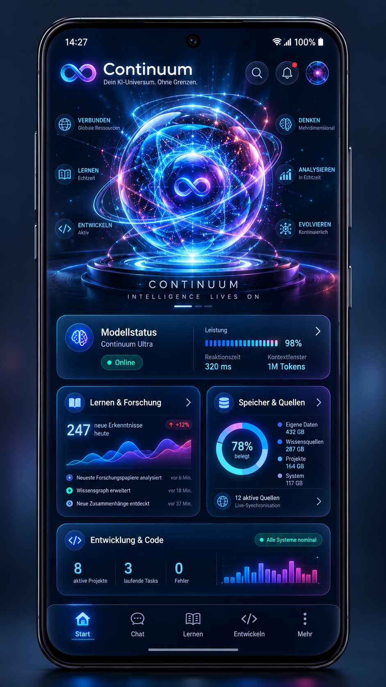
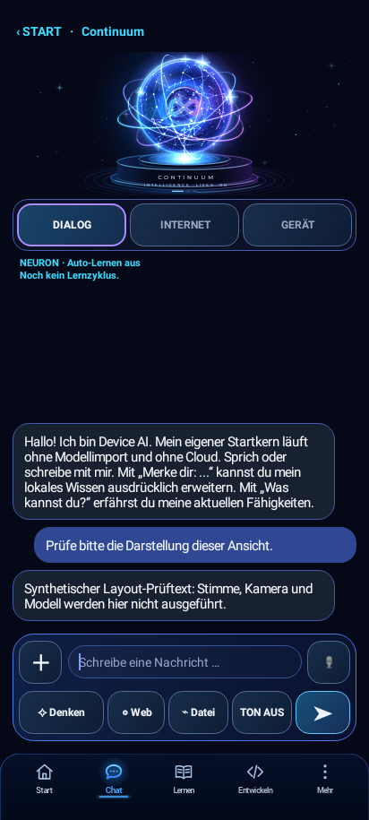
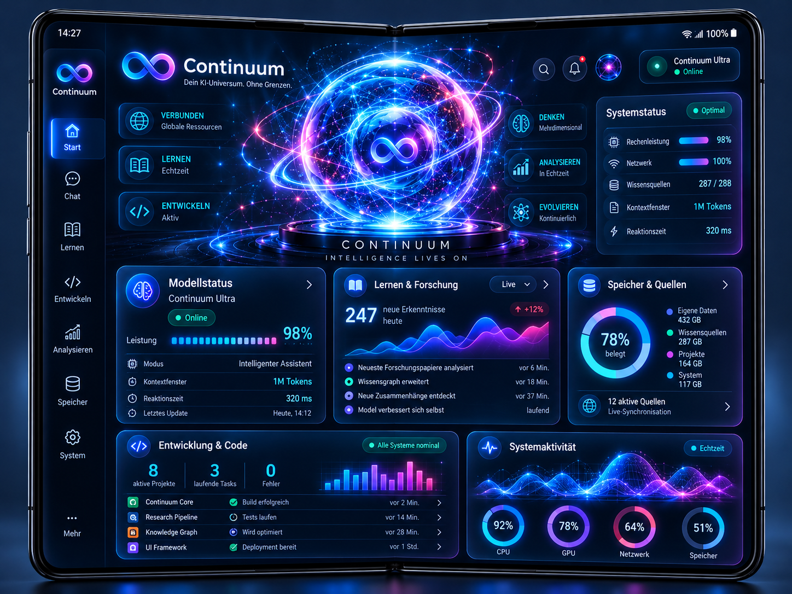
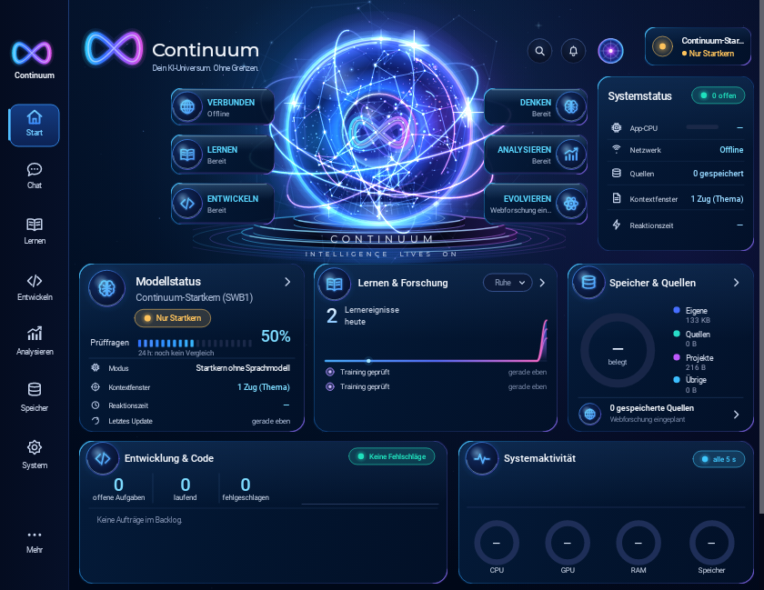
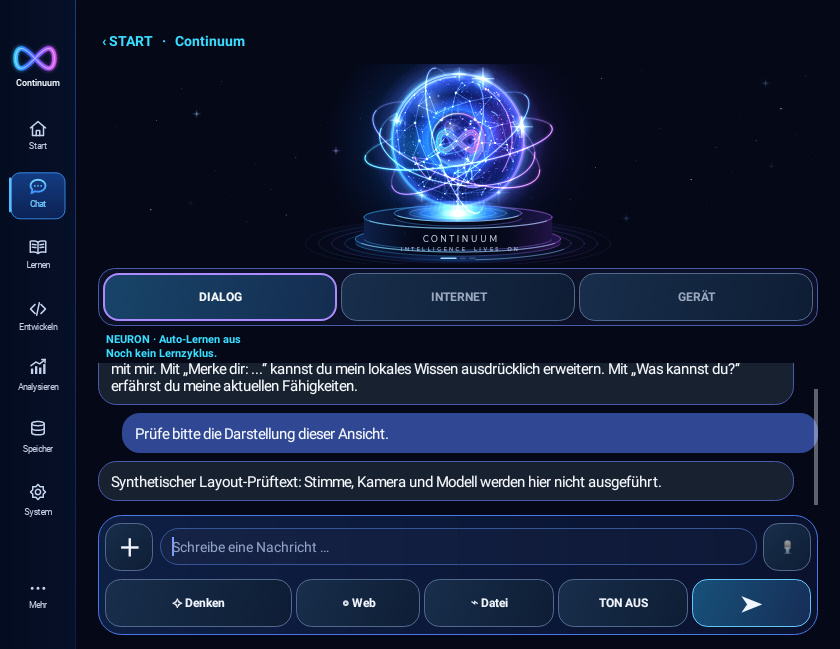
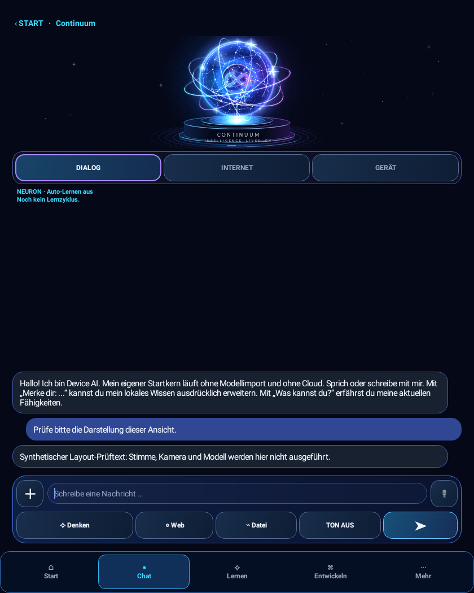

Telefon · 412 × 915





Quelle 645b2215022008e2149da81b48683f15077b1fb0. Die PNG-Dateien sind unveränderte Aufnahmen der echten Android-Activity unter Robolectric API28 mit nativer Canvas-Grafik. Tippen auf ein Bild öffnet seine Originalauflösung. Die Darstellung hier skaliert nur für den Bildschirm; keine Bildretusche oder synthetische App-Nachbildung.
HOST_NATIVE_LAYOUT_CAPTURE · kein Fold7-Screenshot. Der Original-Orb wurde in isolierten Testeinstellungen gewählt. Der optionale Filament-Kopf erscheint nicht in diesen Aufnahmen. Die Einführung wurde für diese Layoutprüfung bereits als gesehen markiert; Stimme, Kamera, Modellinferenz und Kontodienste wurden nicht ausgeführt. Keine abschließende visuelle Freigabe.
Prüfbefund: Farbfamilie, Marke, Karten und Navigation bleiben erhalten. Im Fold-Hochformat werden äußere Leuchtringe an der Avatarfläche abgeschnitten. Auf dem Telefon steht ein technischer Bereitschaftstext oberhalb der Navigation. Die Hochformat-Statusleiste benötigt Scrollen. Unterschiedliche echte Datenstände dürfen nicht durch fiktive Referenzzahlen ersetzt werden.





Für Hochformat ist hier keine eigenständige Referenzdatei hinterlegt. Die bestehende 3×2-Anordnung wird geprüft; die Querformatvorlage liefert Farben und Formensprache, keinen identischen Pixelmaßstab.

